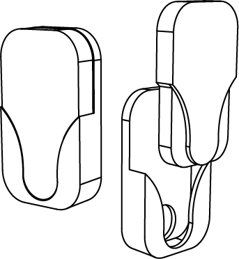

An accessible and alternative solution for clothing fasteners
Project Brief: Purpose & Benefit Sought
“A disability can be temporary or permanent, but it’s an issue that affects all of us at some point.”- Stephen Cluskey
M-Snap an entirely new clothing fastener, providing an alternative to existing standards that features increased accessibility.
A new fastener that adheres to the established affordances yet increases ease of use will allow users to freely express themselves through their choice of clothing by reducing limitations or barriers to entry.
With the ever-growing trend of functional clothing, a new fastener than can improve on the existing standards will see plenty of desirability. This would increase the potential of the new fastener breaking into the market through manufacturer and designer adoption.
By designing with inclusivity at the forefront, we can aim to lower the barriers to participation, encompassing and drawing on the full range of human diversity.